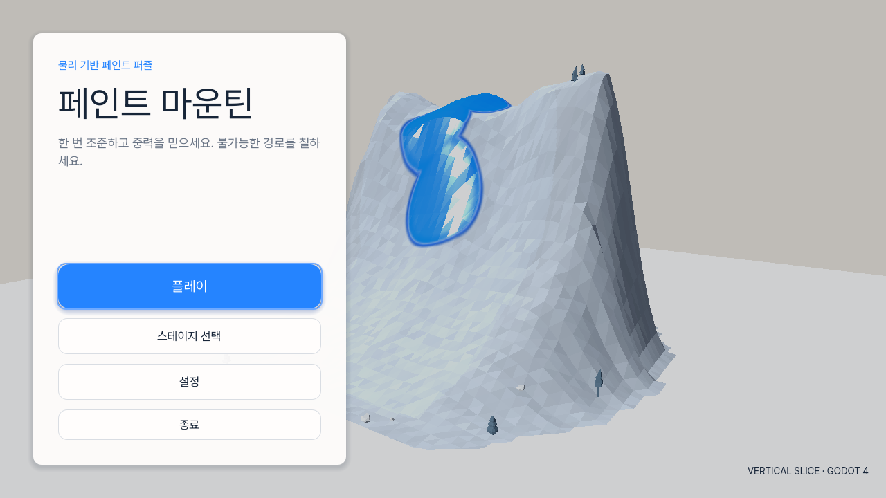
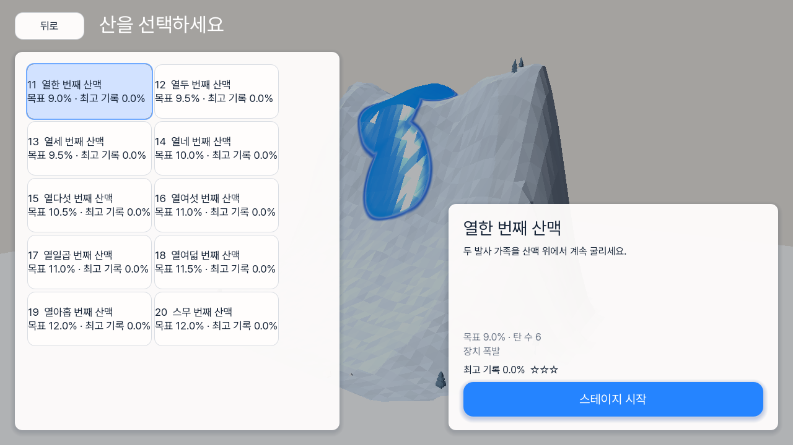
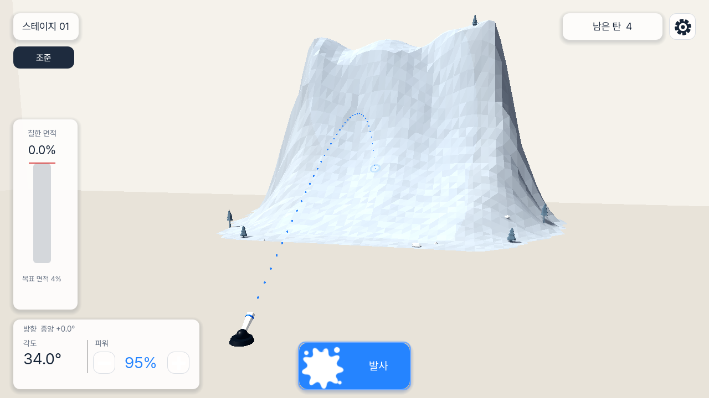
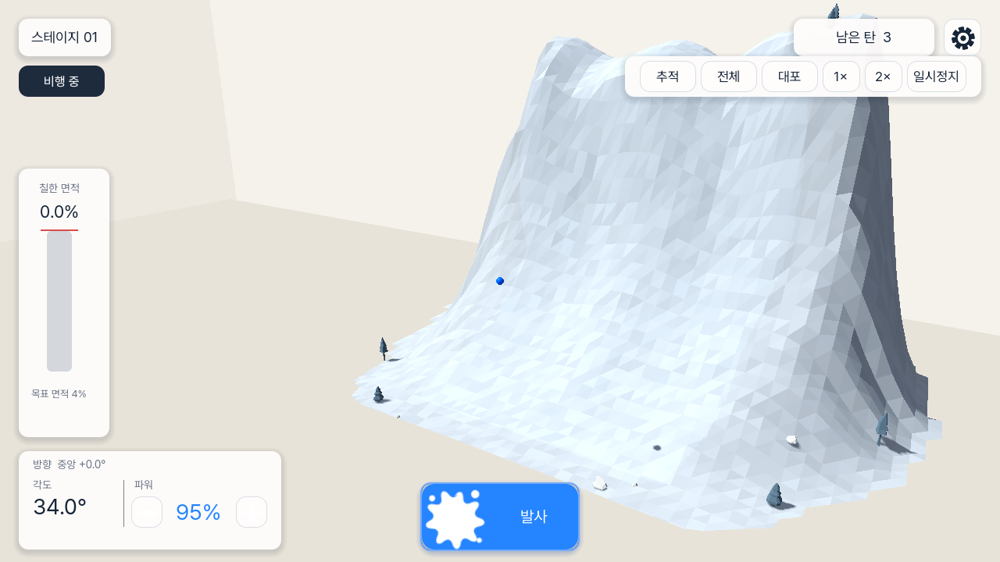
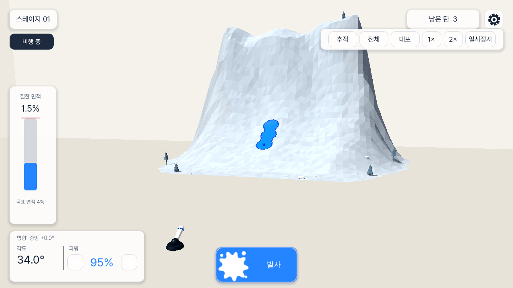
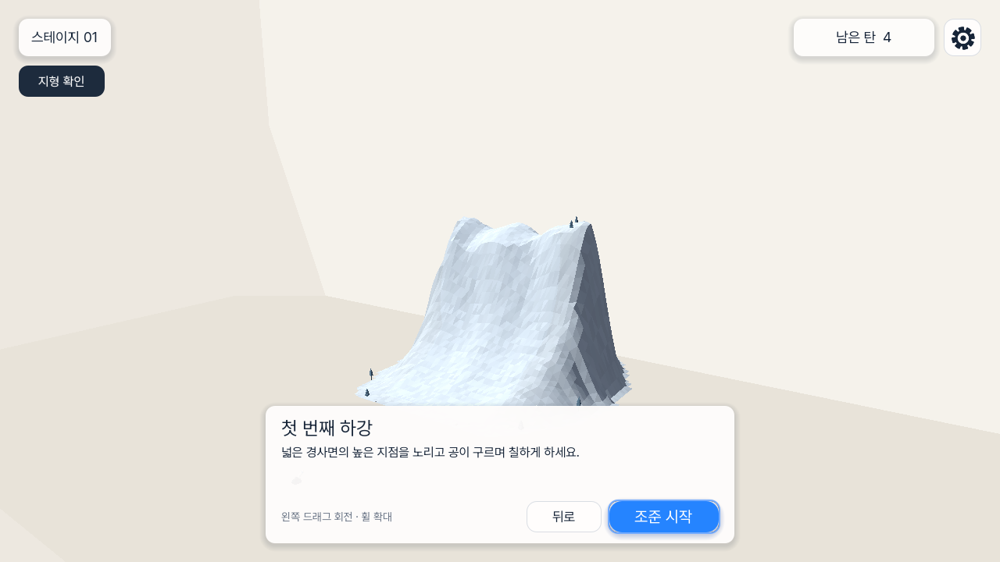
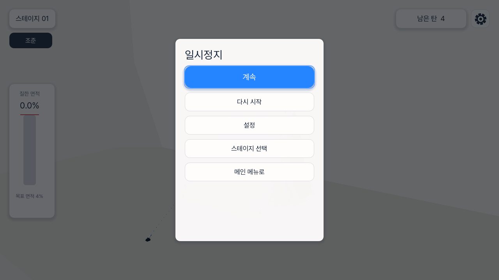
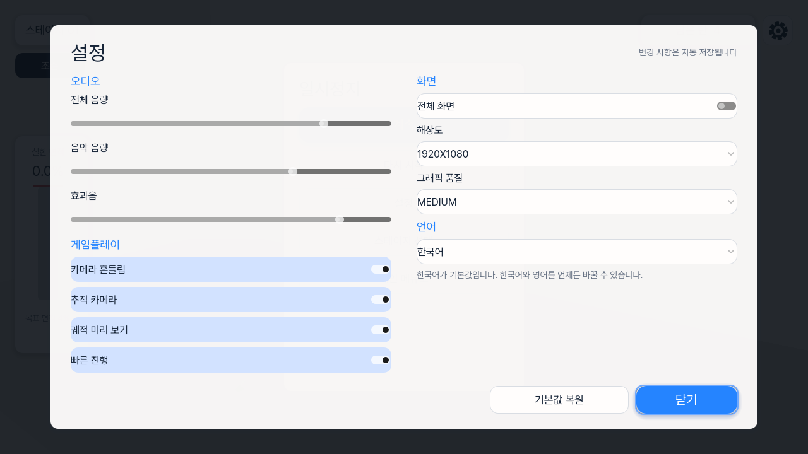
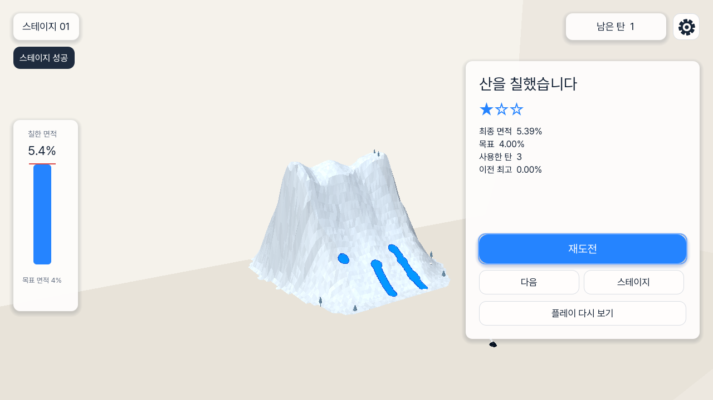
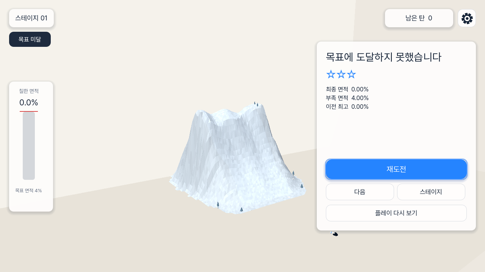

Main menu
The hero is generated from the real Stage 01 world; Play, Stage Select, Settings, and Quit remain simple, high-contrast actions.
This report separates the selected visual direction from the actual running build. Gameplay truth wins when a concept image is illustrative: the mountain, contact, paint mask, coverage, shots, and terminal result are always runtime-owned.
Shared top topology drives render, collision, target rasterization, and paint.
Immediate repeat fire with monotonic shot IDs and family-local observations.
Paint-drain p95 1.37 ms; no responsiveness acceptance failures.

The hero is generated from the real Stage 01 world; Play, Stage Select, Settings, and Quit remain simple, high-contrast actions.

All thirty catalog entries are enabled. Paging and selection read cached catalog data; they do not generate a 3D stage.

Coverage is the single left-side vertical owner. Aim and power stay lower-left, Fire is centered, and settings/shots stay upper-right.

The active ball remains visible while aim and Fire remain available for the next family. Camera, speed, and pause controls are grouped at the top.

The ball physically reaches the closed mountain and paints the traversed top surface through the authoritative mask.

The real world remains visible behind the concise stage briefing rather than a flat preview panel.

Simulation is paused through the StageController owner; Restart lives here rather than in the normal aiming HUD.

Korean is default, language switching is persistent, and Fast Progress is an explicit gameplay setting.

The result is reached by real shots and paint drain. Coverage, target, used shots, and actions come from the terminal owner.

Failure is reached by legal contained non-target shots after the shot budget is exhausted; no HUD state is forced.
Dirty-region texture publication fixed the confirmed paint-render hot path without changing the 512² CPU authority. The late-stage mechanism band intentionally uses 0/1/2 visible mechanisms (intro, Burst, Splitter+Bumper) so the current mountain remains readable and difficulty grows gradually; the six-object concept is recorded as future capacity.
Source evidence: .agents/evidence/2026-08-05-execution-evidence.md · quality audit: .agents/evidence/2026-08-05-quality-audit.md.